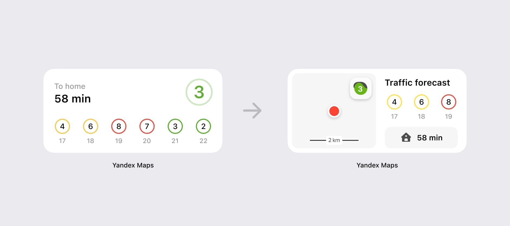
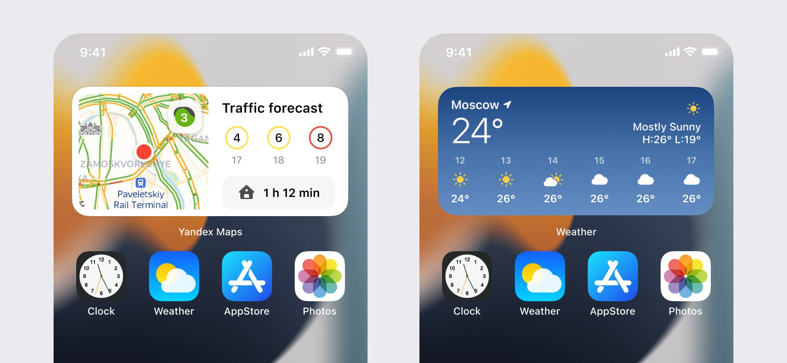

March, 2020
Traffic widget
iOS 14 gave users the ability to display widgets on any app screen. This is a good feature and we decided to support it. We started with the main features of our product that people use every day, it is a traffic situation.

Process
My first idea was to create a level widget without a map. This is a simplification of how we could show traffic levels. I used colors to show the state of the city's traffic. I also show the travel time to work or home.
I tried several color options, but they looked aggressive and distracted too much.
The problem with this widget is that you don't know what it means for your current situation, because this level is for the whole city, not for your current location.
Then I decided that the traffic widget is the same as the weather widget. But the problem is that in the weather widget you can find out the sunny or rainy state because it shows the state at your current location. The traffic level shows the situation in the whole city and it may not be exactly right for your current location.

That's why I decided to show our map with the traffic layer. This helps to understand what kind of traffic conditions are around you. The 3 hour forecast is still useful and I've made the button for opening routes more visible than in the previous version.
I am showing a map with a radius of almost 2 km for a small and medium widget. In large phones, our user sees a large map.
Now when you see this widget you can change your decision to go, for example, to go home or to work. Because you could choose between several roads, you can see which ones are in traffic and which are not. When you see the map, you understand the traffic situation within a 2 km radius.
I am using the same color palette as in our application. We have four color gradations for the levels of traffic jams.

The middle widget shows forecast and map in one interface. You can see the level of traffic in the city, traffic jams around you, traffic forecast. In the middle button, you can open the app or get directions to home or work if you press the ETA button.
It contains the same information as the weather widget. This information is important because it can change your decision, for example, if it's raining or there are huge traffic jams.
The large widget shows a large piece of the map with a traffic forecast for 6 hours.

We support dark mode. Works with system settings.
An interesting fact about the point of your position. For a small widget, I use the optical center. You can see that if you put the location in the center of the small widget, it looks unbalanced.

For Android, we support all widget grid states, including the largest and smallest variations. We also added settings when adding our widget.

The Android widget has settings where the user can configure traffic jams, map scale and update time. This means that the traffic widget can be flexible for power users as well.

This is what the various map scale settings look like. I used zoom settings 14, 12, 10.
Result
I created an introductory screen where we are shown our new widget. Here we explain how to add this widget to the screen. This is especially useful for iOS because it was a new feature.
Every day, thousands of people use our widget on iOS and Android platforms. I am very glad that part of my work is useful to people and they make this widget every day a little better our life.